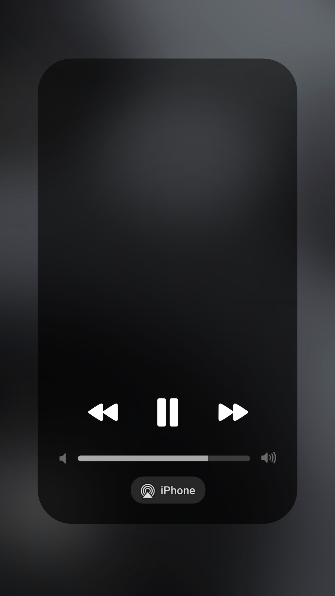
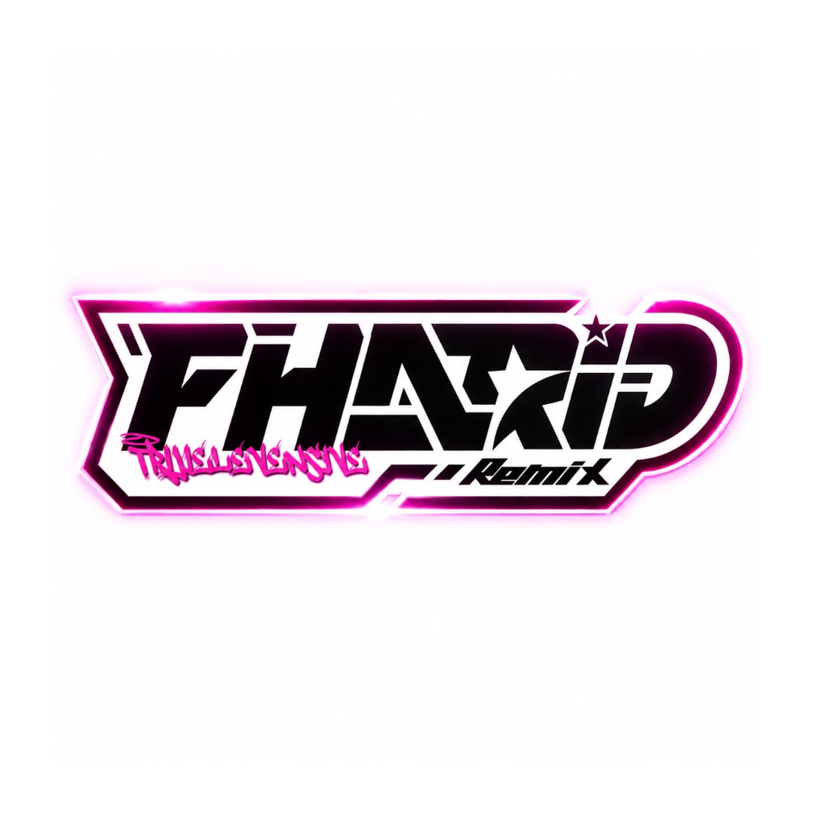

Mengekspor Video
0%
Batal
⚠️ Mohon untuk tidak keluar dari halaman atau mengunci layar Anda saat ekspor sedang berlangsung.


Dj Fharid Rmx
Fharid Yn
0.00
– 0.00
Fharid Rmx - Dual Version
Pilih Mode Tampilan (Preview)
Vertikal (9:16)
Horizontal (16:9)
Pilih lagu
Pilih foto album
Judul lagu
Nama artis
Pilih Resolusi Video
SD
HD
Full HD
Pilih Kecepatan FPS
25 FPS
30 FPS
60 FPS
● Rekam video
■ Berhenti
Pilih mode preview, lalu klik Rekam!
Simpan hasil video MP4
📢 Info Update
©Fharid Rmx